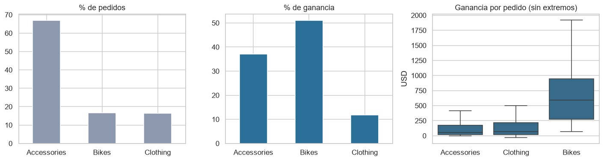
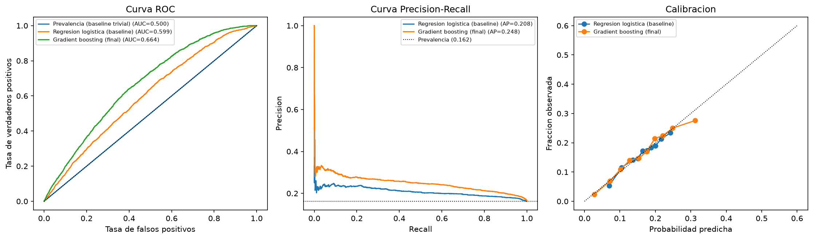
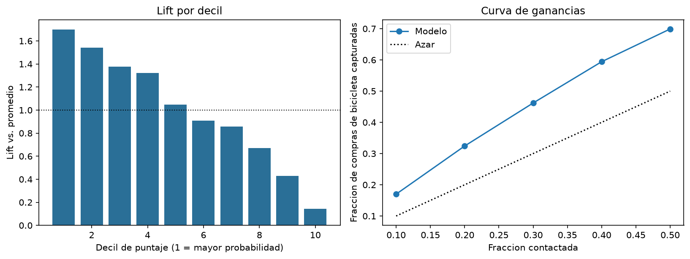
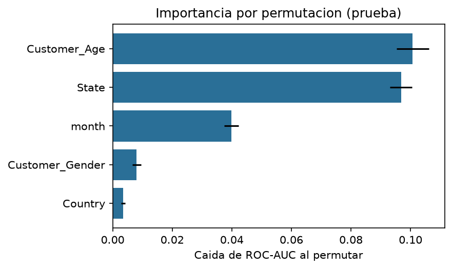

Una empresa que vende bicicletas, accesorios y ropa de ciclismo en seis países debe decidir a quién dirigir sus campañas con un presupuesto limitado. Las bicicletas son solo el 17 % de los pedidos, pero generan el 51 % de la ganancia (figura 1), así que atraer al cliente correcto importa. Este proyecto construye un modelo de Machine Learning que estima, a partir del perfil del cliente, qué tan probable es que su compra sea una bicicleta, y lo traduce en una lista de prioridades. Se siguió la metodología CRISP-DM de seis fases (comprensión del negocio, de los datos, preparación, modelado, evaluación y despliegue) [1].
| Elemento | Descripción |
|---|---|
| Contexto | Venta de bicicletas y accesorios en EE. UU., Australia, Canadá, Reino Unido, Alemania y Francia. |
| Stakeholder | Gerencia de Marketing / Ventas Regionales: decide a qué perfiles y mercados dirigir campañas de bicicletas. |
| Pregunta | Dado el perfil de un cliente (edad, género, ubicación) y el mes, ¿qué probabilidad hay de que compre una bicicleta y qué perfiles conviene priorizar? |
| Objetivo analítico | Clasificación binaria (¿bicicleta, sí/no?) que entrega una probabilidad para ordenar perfiles. |
| Métricas de éxito | Técnica: ROC-AUC y PR-AUC mayores que la línea base en datos no vistos [2]. Comercial: % de compras de bicicleta capturadas al contactar solo al k % mejor puntuado, frente al azar (curva de ganancias) [3]. |
| Impacto | Focalizar el primer contacto en los perfiles de mayor puntaje: con el 30 % de los contactos se alcanza ≈46 % de las compras de bicicleta (30 % al azar). No se estima ROI en dólares: el dataset no incluye costos de campaña ni tasas de respuesta. |
Fuente. Sales Data, Kaggle (enlace entregado en la guía del curso) [4]: 113,036 filas y 18 columnas (fecha, edad y género del cliente, país, estado, producto, cantidad, costo, precio, ingreso y ganancia), 2011–2016. No existe identificador de cliente: cada fila es una transacción. Tras la limpieza quedan 96,359 pedidos.
Calidad y decisiones (el detalle y el código están en el notebook):
| Hallazgo | Evidencia | Decisión |
|---|---|---|
| Valores faltantes | 0 en todas las columnas | No se imputa. |
| Duplicados | 1,000 filas idénticas (0.9 %); 917 están justo debajo de su original (copias pegadas); quedan 112,036 | Se eliminan. |
| Etiquetas de producto | Cada producto tiene un solo precio y costo, pero 24 filas traen subcategoría distinta (10 también categoría); p. ej., una bicicleta Touring-1000 etiquetada como Vests. Solo 2 filas cambian «es bicicleta» | Se corrige con la categoría y subcategoría mayoritarias de cada producto. |
| Consistencia | Cost = costo unitario × cantidad y Profit = ingreso − costo en el 100 % de filas | Sin correcciones. |
| Atípicos | Edades hasta 87 años (526 fuera de 1.5×IQR [5]); 58 ganancias negativas; ganancias altas = bicicletas caras | Se conservan: son ventas reales; los árboles son robustos a extremos. |
| Registros "gemelos" | El 100 % de las llaves (día, mes, edad, género, estado, producto) de 2012, 2015 y 2016 ya existen en 2011, 2013 y 2014, con cantidades distintas | Patrón consistente con datos extendidos artificialmente (origen no documentado). Se usa partición por grupos para evitar fuga [6]. |
| Cambio de catálogo | Accesorios y Ropa solo existen desde jul-2013 (antes: 100 % bicicletas); jul-2013 es el mes de lanzamiento; en jul-2014 (y 2016) no hay bicicletas. Las 15,677 filas de esos meses (14 %) tienen 62.5 % de bicicletas vs. 16.6 % en el resto | Se conservan solo los meses con las 3 categorías (y el mes previo también): 22 meses, 96,359 filas. Otro régimen de catálogo no es comportamiento del cliente. |
| Un solo ciclo | La ventana estable cubre agosto→junio una vez (más su copia); julio no aparece. Los días de la semana son uniformes (≈14 % cada uno) | No se pronostican series; el efecto del mes se interpreta con cautela y no se extrapola a julio. |

catalog.yml y parameters.yml [13]; GitHub Actions con Ruff [14], pruebas y kedro run en cada push.Se eligió el gradient boosting de histogramas (HistGradientBoostingClassifier, scikit-learn [15]) porque (i) el boosting sobre árboles es el estándar práctico en datos tabulares con variables mixtas [12, 16]; (ii) maneja categorías (estados) y valores desconocidos sin transformaciones pesadas; (iii) entrena en segundos con 100 mil filas; y (iv) se interpreta con herramientas estándar. La regresión logística queda como alternativa si se prioriza transparencia total. Random forest y redes neuronales no se probaron: es una justificación a priori, no un resultado empírico. En un experimento adicional (notebooks/experimento_lightgbm.ipynb, mismos pliegues agrupados) sí se compararon LightGBM [19] con 60 intentos de búsqueda bayesiana [20] y CatBoost [21]: ninguno mejora el AUC de forma distinguible del ruido (diferencias de −0.001 a +0.002 en prueba; IC95 % que incluyen 0); una mezcla de los tres sube la PR-AUC ≈0.007 (de 0.250 a 0.257 en esa prueba), una mejora pequeña que no justifica la complejidad adicional. El modelo no se eligió solo por la métrica: la diferencia con la regresión logística es de ≈6 puntos de AUC (0.664 vs. 0.599), a cambio de un modelo algo menos transparente pero explicable y barato de entrenar.
Hiperparámetros elegidos: tasa de aprendizaje 0.071, 406 iteraciones, 14 hojas máximas (sin límite de profundidad), mínimo 40 muestras por hoja, regularización L2 = 8.57. Las 25 configuraciones dieron PR-AUC entre 0.247 y 0.254 en validación: el límite lo pone la señal disponible, no el ajuste.
| Modelo (conjunto de prueba, n = 19,108) | ROC-AUC | PR-AUC | Brier |
|---|---|---|---|
| Línea base: prevalencia | 0.500 | 0.162 | 0.136 |
| Regresión logística | 0.599 | 0.208 | 0.134 |
| Gradient boosting (final) | 0.664 | 0.248 | 0.130 |

| Contactos (top % del puntaje) | Compras de bicicleta capturadas | (Azar) | Ganancia total capturada |
|---|---|---|---|
| 10 % | 17 % | 10 % | 12 % |
| 20 % | 32 % | 20 % | 24 % |
| 30 % | 46 % | 30 % | 37 % |
| 50 % | 70 % | 50 % | 58 % |
El 10 % de pedidos con mayor puntaje compra bicicleta en el 27.6 % de los casos (1.7× el promedio de 16.2 %); el 10 % de menor puntaje, solo en el 2.3 % (0.14×). La mejora sobre las líneas base es clara (la regresión logística, 0.599, queda fuera del IC del modelo final), pero el poder discriminativo es modesto: con solo edad, lugar y mes no se puede "adivinar" una compra individual.

Edad, estado y mes concentran casi toda la señal; el género aporta algo pequeño y el país casi nada (figura 4). La propensión es mayor entre 25 y 44 años (≈18–19 %) y cae a partir de los 45; los mayores de 64 años compran bicicletas en solo el 5 % de sus pedidos. Por mercado: Alemania (21.8 %), Reino Unido (20.4 %), Australia (19.5 %) y Francia (19.0 %) superan el promedio de 16.6 %; EE. UU. (14.9 %) y sobre todo Canadá (7.4 %) quedan por debajo. Entre los estados con al menos 500 pedidos destacan Bayern (23.9 %), Saarland (22.8 %), South Australia (22.2 %), Hessen y Hamburg (22.0 %); British Columbia (7.3 %), Oregon (13.3 %) y Washington (13.8 %) son los más bajos. El mes también aporta señal (≈13 % de bicicletas en agosto y ≈20 % en diciembre), pero solo se observa un ciclo de 11 meses (julio nunca aparece), por lo que ese patrón no puede validarse.

Con solo cinco variables de perfil y contexto, un gradient boosting validado sin fuga de información logra priorizar clientes: contactando al 30 % mejor puntuado se alcanza ≈46 % de las compras de bicicleta y ≈37 % de la ganancia. Es un resultado modesto pero honesto, reproducible con kedro run y con límites explícitos. El siguiente paso recomendado es un piloto A/B para convertir esta priorización en un efecto medido sobre las ventas.
[1] Chapman, P., Clinton, J., Kerber, R., Khabaza, T., Reinartz, T., Shearer, C., & Wirth, R. (2000). CRISP-DM 1.0: Step-by-step data mining guide. CRISP-DM Consortium.
[2] Saito, T., & Rehmsmeier, M. (2015). The precision-recall plot is more informative than the ROC plot when evaluating binary classifiers on imbalanced datasets. PLoS ONE, 10(3), e0118432. https://doi.org/10.1371/journal.pone.0118432
[3] Provost, F., & Fawcett, T. (2013). Data science for business. O'Reilly Media.
[4] Bhatti, J. (s. f.). Sales Data [Conjunto de datos]. Kaggle. https://www.kaggle.com/datasets/jehanzaibbhatti/sales-data (enlace de la guía del curso).
[5] Tukey, J. W. (1977). Exploratory data analysis. Addison-Wesley.
[6] Kaufman, S., Rosset, S., Perlich, C., & Stitelman, O. (2012). Leakage in data mining: Formulation, detection, and avoidance. ACM Transactions on Knowledge Discovery from Data, 6(4), 15. https://doi.org/10.1145/2382577.2382579
[7] Efron, B., & Tibshirani, R. J. (1993). An introduction to the bootstrap. Chapman & Hall.
[8] Bergstra, J., & Bengio, Y. (2012). Random search for hyper-parameter optimization. Journal of Machine Learning Research, 13, 281–305.
[9] Breiman, L. (2001). Random forests. Machine Learning, 45(1), 5–32. https://doi.org/10.1023/A:1010933404324
[10] Fisher, A., Rudin, C., & Dominici, F. (2019). All models are wrong, but many are useful. Journal of Machine Learning Research, 20(177), 1–81.
[11] Lundberg, S. M., & Lee, S.-I. (2017). A unified approach to interpreting model predictions. Advances in Neural Information Processing Systems, 30. arXiv:1705.07874.
[12] Friedman, J. H. (2001). Greedy function approximation: A gradient boosting machine. The Annals of Statistics, 29(5), 1189–1232. https://doi.org/10.1214/aos/1013203451 (introduce también la dependencia parcial).
[13] Kedro. (s. f.). Kedro documentation. https://docs.kedro.org
[14] Astral. (s. f.). Ruff documentation. https://docs.astral.sh/ruff/
[15] Pedregosa, F., et al. (2011). Scikit-learn: Machine learning in Python. Journal of Machine Learning Research, 12, 2825–2830.
[16] Ke, G., Meng, Q., Finley, T., Wang, T., Chen, W., Ma, W., Ye, Q., & Liu, T.-Y. (2017). LightGBM: A highly efficient gradient boosting decision tree. Advances in Neural Information Processing Systems, 30.
[19] Ke, G., et al. (2017), ver [16]. LightGBM: documentación en https://lightgbm.readthedocs.io
[20] Akiba, T., Sano, S., Yanase, T., Ohta, T., & Koyama, M. (2019). Optuna: A next-generation hyperparameter optimization framework. Proceedings of the 25th ACM SIGKDD Conference (KDD), 2623–2631.
[21] Prokhorenkova, L., Gusev, G., Vorobev, A., Dorogush, A. V., & Gulin, A. (2018). CatBoost: Unbiased boosting with categorical features. Advances in Neural Information Processing Systems, 31.
[18] Niculescu-Mizil, A., & Caruana, R. (2005). Predicting good probabilities with supervised learning. Proceedings of the 22nd ICML, 625–632.
Nota: los datos bibliográficos deben verificarse contra la fuente original antes de entregar; solo CRISP-DM se confirmó con una búsqueda en línea durante la elaboración. Todas las cifras provienen de la ejecución del pipeline (data/08_reporting/) y del notebook analisis_completo.ipynb.